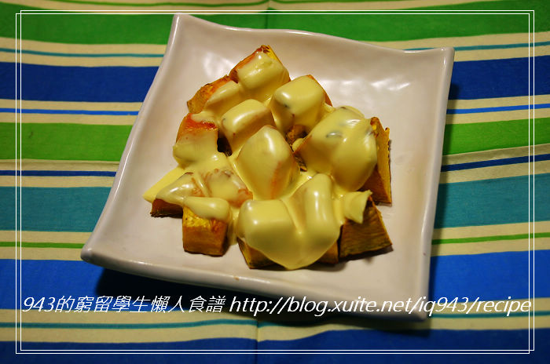
日式乳酪蜜汁烤南瓜
南瓜原本就甜，加上蜂蜜和乳酪一起烤就更好吃了，是很適合當點心的小菜喔!
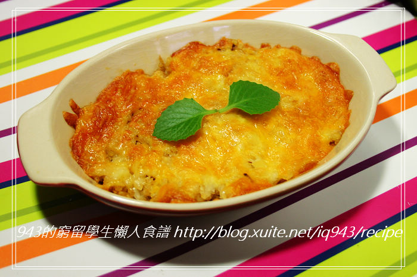
玉米杯懶人焗飯
很多人都知道濃湯罐頭可以當現成的白醬來焗烤，其實杯湯也有類似的效果，很方便好用，大家可以用各種口味試試看喔
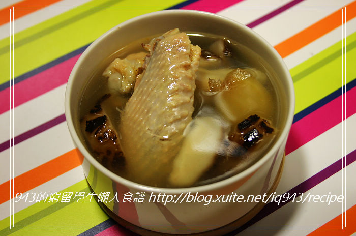
香菇雞湯
雞湯的變化類型有很多，加個竹笙吃起來會更鮮美，若加個蔭瓜罐頭就成了瓜仔雞囉！
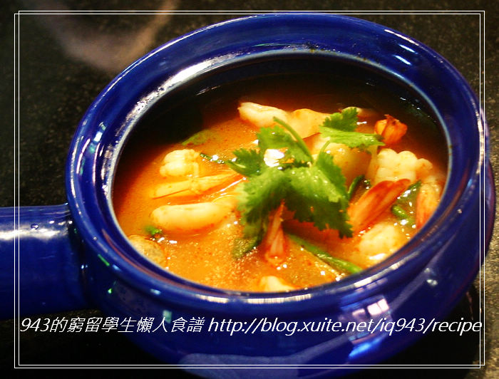
泰式酸辣湯
也可以自己加入其他食材，加入蝦子就成了泰式酸辣海鮮湯囉！
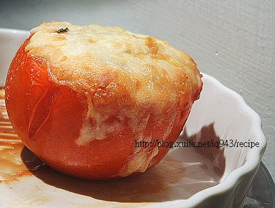
迷你番茄焗飯
有些西式口味的剩菜適合放入番茄中焗烤，例如沙拉、煎鮭魚等。味道不適合的就不要放免得壞了番茄的味道喔。
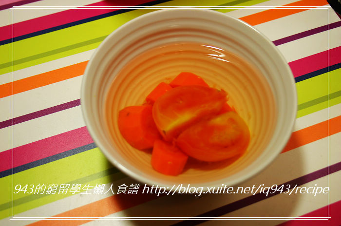
南洋風ABC湯
除了味道很棒和做法簡單以外，我喜歡這湯的原因是因為紅蘿蔔和馬鈴薯都是既便宜又不須花很多時間清洗的蔬菜，而且這湯完全無油呢。另外，西洋芹和紅蘿蔔煮的蔬菜湯也是超甜的，還有洋蔥、高麗菜...以上食材都可以任選兩三種來煮湯，天然的甜味讓湯頭變得很棒！
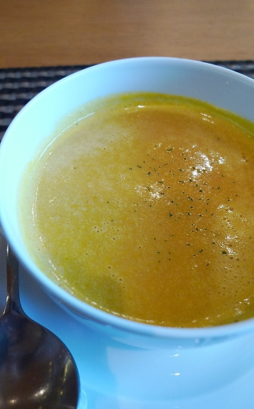
奶香南瓜濃湯
這食譜沒有加任何麵粉或馬鈴薯，卻還是有濃稠的口感，滿簡便的。如果要放其他食材的話，建議不要放太多，否則會搶了南瓜的爽口甜味喔。
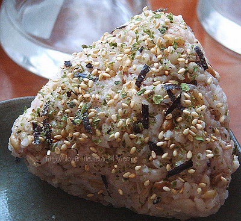
日式握飯糰
也是免洗免切免沾手的超懶級料理，將剩飯剩菜變化一下也很棒！
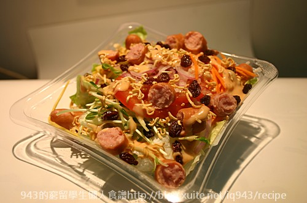
德國香腸科學麵脆沙拉
這道沙拉有很豐富的口感，從很酥很脆的科學麵，到有點咬起來嗶嗶剝剝的德國香腸，到清爽的生菜，最後是軟軟甜甜又黏黏的葡萄乾和流質的千島醬，各種軟硬程度都有
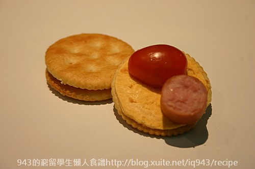
德國香腸輕食沙拉
很多人都知道濃湯罐頭可以當現成的白醬來焗烤，其實杯湯也有類似的效果，很方便好用，大家可以用各種口味試試看喔
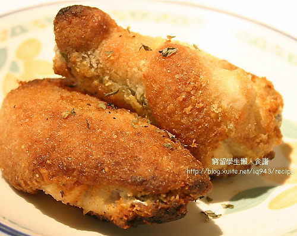
不用洗不用切不用油不用鍋子的香酥雞腿
介紹一道可說是宇宙無敵等級的懶人料理
不用洗、不用切、不需要在廚房顧爐火、不用翻面、更不用洗鍋子
只要把雞腿和沾粉丟進塑膠袋再取出放烤箱就好，夠懶了吧？
日式乳酪蜜汁烤南瓜
南瓜洗淨不須去皮，切成一口可吃的小塊備用
在烤盤上淋上蜂蜜，再將南瓜在蜂蜜上，用筷子將南瓜每一面沾勻蜂蜜。
以200度烤15分鐘，中途記得翻面使南瓜的甜味均勻。
等時間到或南瓜表面的蜂蜜變硬時，蓋上起司片再烤5分鐘即可。
奶香南瓜濃湯
事先準備
- 南瓜半個
- 牛奶或奶粉隨意
- 鹽少許
- 高湯半碗（可用高湯塊或調味包或罐頭的湯汁）
將南瓜洗淨去籽，不須削皮，在煮飯時順便將南瓜放在米上蒸熟。（若南瓜很硬難下刀請先微波1-2分鐘變軟再切）
將煮熟的南瓜取出，連同高湯半碗放入果汁機中攪碎。
打好後倒入湯碗中，加入鹽、牛奶或奶粉攪勻，微波2分鐘，開飯時就有南瓜濃湯可以喝囉。